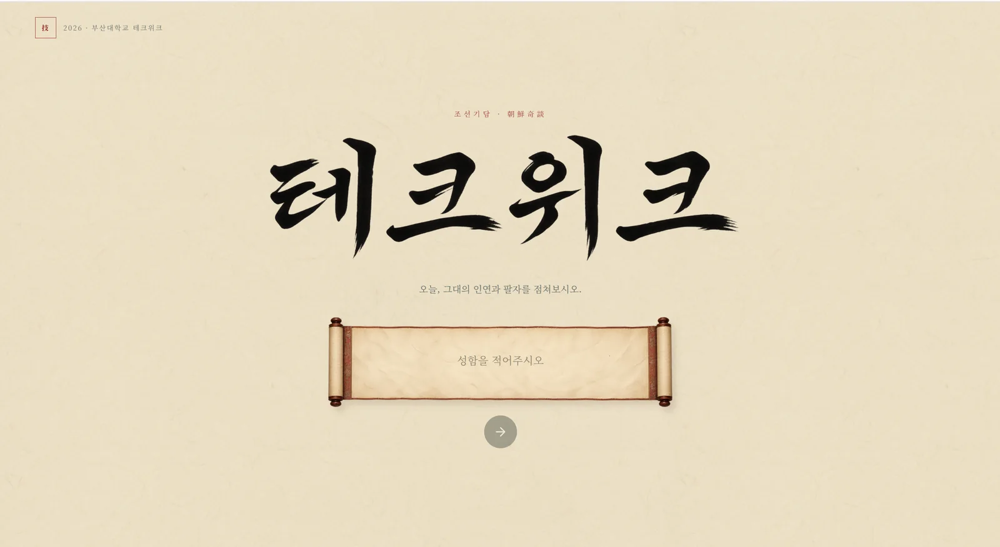
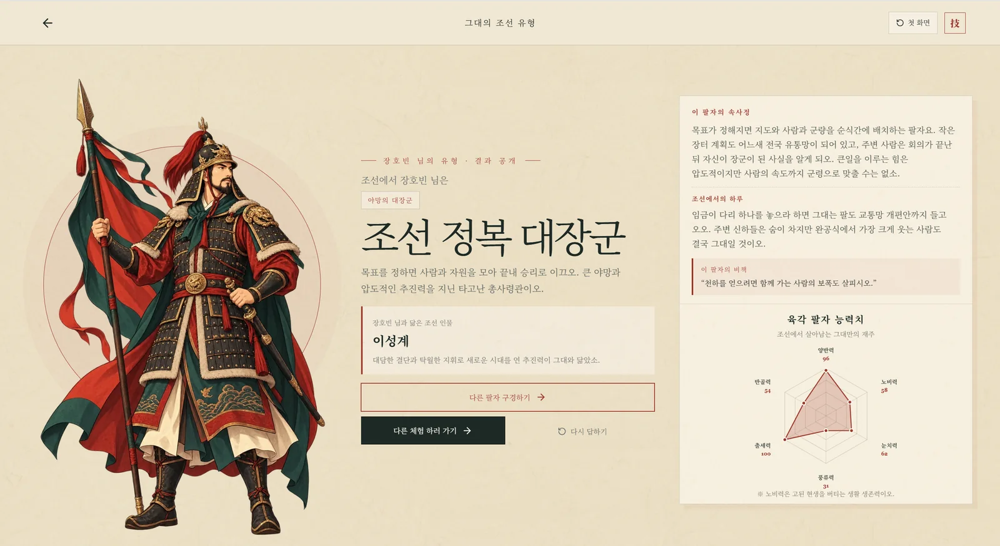
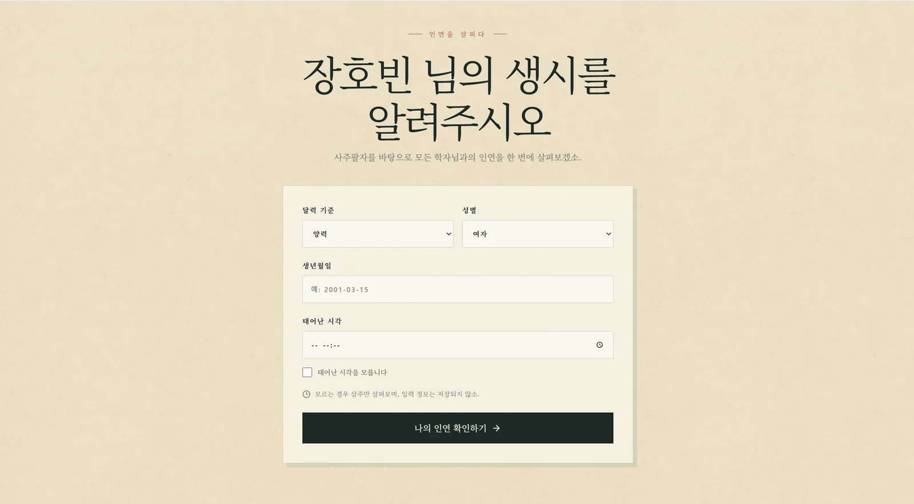
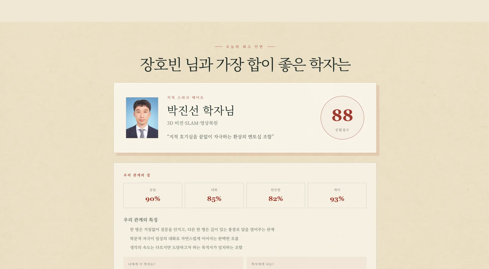

조선 팔도 나의 팔자는?
12개의 질문으로 MBTI 성향을 파악한 뒤 조선시대 인간상으로 재해석해 결과를 보여줍니다.
2026 · TECHWEEK STUDENT COUNCIL BOOTH
MBTI와 사주를 조선시대 세계관으로 재해석한 행사 체험형 웹사이트입니다.

2026년 TECHWEEK 학생회 부스에서 사용한 웹사이트입니다. 방문객이 짧은 시간 안에 참여하고 결과를 확인할 수 있도록 두 가지 체험을 독립된 흐름으로 설계했습니다.
12개의 질문으로 MBTI 성향을 파악한 뒤 조선시대 인간상으로 재해석해 결과를 보여줍니다.
생년월일시와 성별을 입력하면 Gemini API가 사주를 해석하고, 사전에 등록한 교수님 중 가장 잘 맞는 인물을 제안합니다.
2026년 TECHWEEK 학생회 부스 운영두 가지 체험을 하나의 웹사이트로 구성해 행사 방문객이 현장에서 이용할 수 있도록 제공했습니다.



